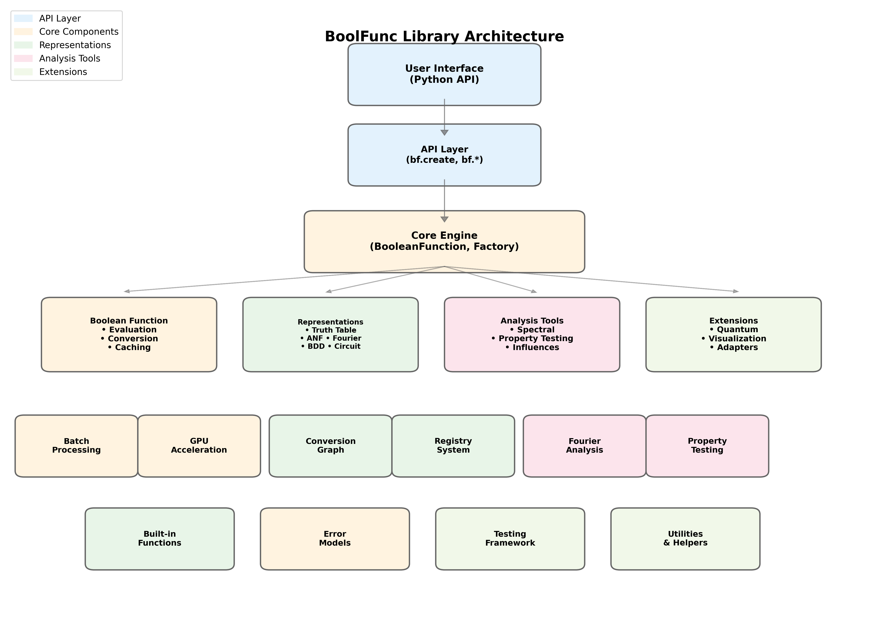

Architecture
BooFun is a modular Boolean function analysis library designed around lazy evaluation, pluggable representations, and mathematical rigor. This document describes the high-level architecture and key design decisions.
Architecture Diagram

Mermaid source (for GitHub rendering)
flowchart TB
subgraph API["Public API"]
create["bf.create()"]
builtins["bf.majority()<br/>bf.parity()<br/>bf.tribes()<br/>bf.f2_polynomial()"]
io["bf.load()<br/>bf.save()"]
end
subgraph Core["Core Module"]
BF["BooleanFunction<br/>• fourier(), influences()<br/>• is_global(α)<br/>• __eq__, __hash__"]
Factory["BooleanFunctionFactory"]
Space["Space + Measure"]
ErrorModel["ErrorModel"]
end
subgraph Representations["Representations (Strategy Pattern)"]
Registry["Registry<br/>(STRATEGY_REGISTRY)"]
subgraph RepTypes["Representation Types"]
TT["TruthTable<br/>(dense / packed / sparse / adaptive)"]
Fourier["FourierExpansion"]
ANF["AlgebraicNormalForm"]
Poly["Polynomial<br/>(real multilinear)"]
BDD["BinaryDecisionDiagram"]
DNF["DNF / CNF"]
Circuit["Circuit"]
Symbolic["Symbolic"]
LTF["LinearThreshold"]
Dist["Distribution"]
end
end
subgraph Conversion["Conversion System"]
ConvGraph["ConversionGraph"]
ConvCost["ConversionCost"]
PathFind["Two-Level Hub Dispatch<br/>(via truth_table)"]
end
subgraph Analysis["Analysis Module (28 modules)"]
Spectral["SpectralAnalyzer<br/>• fourier(), influences()<br/>• noise_stability()"]
PropTest["PropertyTester<br/>• BLR linearity<br/>• monotonicity, junta"]
Complexity["Complexity<br/>• D(f), s(f), bs(f)<br/>• certificates, Ambainis"]
PBiased["P-Biased Analysis<br/>• p_biased_expectation<br/>• threshold_curve<br/>• Fourier tails L_{1,k}"]
Hyper["Hypercontractivity<br/>• KKL, Bonami, Friedgut<br/>• Global (Keevash et al.)"]
Invariance["Invariance Principle<br/>• Gaussian analysis<br/>• Berry-Esseen<br/>• Majority is Stablest"]
Crypto["Cryptographic<br/>• nonlinearity, bent<br/>• LAT/DDT, SAC"]
Learning["Learning<br/>• Goldreich-Levin<br/>• PAC, junta learning"]
Sampling["Sampling<br/>• Monte Carlo estimation<br/>• Adaptive sampling<br/>• RandomVariableView"]
end
subgraph Families["Built-in Families"]
Majority["majority(n)"]
Parity["parity(n)"]
Tribes["tribes(k,n)"]
Dictator["dictator(n,i)"]
Threshold["threshold(n,k)"]
F2Poly["f2_polynomial(n,monomials)"]
end
subgraph Viz["Visualization"]
Plotter["BooleanFunctionVisualizer"]
DecTree["Decision Tree Export"]
Growth["GrowthVisualizer"]
end
subgraph Utils["Utilities"]
Exceptions["Exception Hierarchy"]
Math["Math / Number Theory"]
end
%% Connections
create --> Factory
builtins --> Factory
io --> BF
Factory --> BF
Factory --> Registry
BF --> Registry
BF --> ConvGraph
BF --> Space
BF --> ErrorModel
Registry --> RepTypes
ConvGraph --> ConvCost
ConvGraph --> PathFind
ConvGraph --> Registry
BF --> Spectral
BF --> PropTest
BF --> Complexity
BF --> PBiased
BF --> Hyper
BF --> Invariance
BF --> Crypto
BF --> Learning
BF --> Sampling
Families --> Factory
BF --> Plotter
BF --> Growth
Analysis --> Math
Core --> Exceptions
Component Overview
Public API (api.py, __init__.py)
The public API provides a unified entry point for users:
import boofun as bf
# All roads lead through bf.create()
f = bf.create([0, 1, 1, 0]) # Truth table
f = bf.create(lambda x: x[0] ^ x[1], n=2) # Callable
f = bf.create("x0 & x1", n=2) # Symbolic
f = bf.majority(5) # Built-in
Design decision: A single create() function with type detection simplifies the API. Storage hints (storage='packed', 'sparse', 'lazy') allow users to optimize without understanding internals.
Core Module (core/)
BooleanFunction (base.py)
The central class representing a Boolean function. Key features:
Lazy evaluation: Representations are computed on-demand
Multiple representations: A function can have truth table, Fourier, ANF simultaneously
Callable interface:
f([1,0,1])orf(5)both workOperator overloading:
f & g,f | g,~f,f ^ g
class BooleanFunction:
def __init__(self, space, error_model, ...):
self.representations: Dict[str, Any] = {} # Lazy cache
self.n_vars: int
self.space: Space
Factory (factory.py)
Handles creation from various input types:
Auto-detects input type (list, callable, string, file path)
Delegates to appropriate
from_*methodsValidates inputs and sets
n_vars
Space and Measure (spaces.py)
Defines the mathematical domain/codomain and probability measures:
class Space(Enum):
BOOLEAN_CUBE = "boolean_cube" # {0,1}^n → {0,1}
PLUS_MINUS_CUBE = "plus_minus_cube" # {-1,+1}^n → {-1,+1}
REAL = "real" # For Fourier coefficients
class Measure:
"""Probability measure on the hypercube."""
uniform = Measure.uniform() # p = 0.5
biased = Measure.p_biased(p=0.3) # μ_p with p = 0.3
Representations (core/representations/)
Uses the Strategy Pattern for pluggable representations.
Registry (registry.py)
STRATEGY_REGISTRY: Dict[str, Type[BooleanFunctionRepresentation]] = {}
@register_strategy("truth_table")
class TruthTableRepresentation(BooleanFunctionRepresentation):
def evaluate(self, inputs, data, space, n_vars): ...
def convert_to(self, target, data, space, n_vars): ...
Design decision: New representations can be added without modifying core code. Each representation handles its own evaluation and conversion logic.
Available Representations
Representation |
Best For |
Space Complexity |
|---|---|---|
|
Small n (≤14), fast lookup |
O(2^n) |
|
Medium n (14-20) |
O(2^n / 64) |
|
Skewed functions |
O(k) where k = #exceptions |
|
Auto-selecting dense/sparse |
O(min(2^n, k)) |
|
Spectral analysis |
O(2^n) |
|
Algebraic analysis (GF(2)) |
O(2^n) |
|
Real multilinear polynomials |
O(terms) |
|
Human-readable, n=any |
O(expression) |
|
Structure exploitation |
O(varies) |
|
Logic optimization |
O(clauses) |
|
Gate-level evaluation |
O(gates) |
|
Linear threshold functions |
O(n) weights + threshold |
|
Probabilistic analysis |
O(2^n) |
|
Oracles, lazy eval |
O(1) |
Conversion Graph (conversion_graph.py)
Uses two-level hub dispatch through truth_table as the universal hub (replaced Dijkstra pathfinding in v1.3.0).
class ConversionGraph:
def find_optimal_path(self, source, target, n_vars=None):
# 1. source == target → no conversion
# 2. Direct edge exists → use it
# 3. Otherwise → source → truth_table → target
Design decision: Every representation can convert to/from truth_table, so routing through the hub is simpler and more predictable than general shortest-path search, with no loss of functionality. Conversion costs still consider time, space, and accuracy loss.
Analysis Module (analysis/)
Implements algorithms from O’Donnell’s “Analysis of Boolean Functions”:
Submodule |
O’Donnell Ch. |
Key Functions |
|---|---|---|
|
1-2 |
WHT, influences, spectral weight, Fourier tails \(L_{1,k}\) |
|
2, 4 |
Sensitivity, max/min, moments, histogram |
|
4 |
Block sensitivity bs(f), everywhere sensitivity |
|
4 |
Certificate complexity C(f), C_0, C_1 |
|
4 |
D(f), s(f), bs(f), C(f) combined |
|
- |
D, R, Q, Ambainis, spectral adversary, polynomial method |
|
4 |
DP optimal depth, tree enumeration, randomized complexity |
|
- |
Huang’s sensitivity theorem verification |
|
9-10 |
KKL, Bonami, Friedgut, noise operator |
|
Keevash+ |
α-globality, threshold curves, critical p |
|
8 |
P-biased Fourier, influences, expectation |
|
11 |
Invariance distance, Majority is Stablest |
|
10-11 |
Multilinear extension, Berry-Esseen, Hermite |
|
1-3 |
Monte Carlo estimation, adaptive sampling, RandomVariableView |
|
3 |
Goldreich-Levin, junta learning |
|
3 |
PAC learning: low-degree, junta, sparse Fourier, monotone |
|
- |
Nonlinearity, bent, Walsh spectrum, LAT/DDT, SAC, SBoxAnalyzer |
|
2 |
Arrow’s theorem, social choice analysis |
|
2 |
FKN theorem, dictator proximity |
|
- |
Deterministic CC, log-rank, fooling sets, discrepancy |
|
5 |
Chow parameters, critical index, regularity, LTF fitting |
|
6-7 |
Random restrictions, switching lemma, restriction shrinkage |
|
1 |
Symmetry detection, symmetrization, symmetric profile |
|
3 |
Fourier sparsity, granularity, sparse representation |
|
- |
Canalizing variables, nested canalizing depth |
|
- |
Function equivalence testing |
|
1 |
Balance, monotonicity, linearity checks |
|
- |
GF(2) Fourier transform |
Design decision: Analysis functions work on BooleanFunction objects and request representations as needed. Functions are stateless and composable.
Built-in Families (families/, core/builtins.py)
Standard Boolean functions used in research:
bf.majority(n) # MAJ_n: output 1 if >n/2 inputs are 1
bf.parity(n) # XOR_n: output XOR of all inputs
bf.tribes(k, n) # Tribes function (k groups of n)
bf.dictator(n, i) # Output = x_i
bf.threshold(n, k) # Output 1 if ≥k inputs are 1
bf.AND(n), bf.OR(n) # Basic gates
Visualization (visualization/)
BooleanFunctionVisualizer: Influence plots, Fourier spectrum, heatmapsdecision_tree.py: Export decision treesinteractive.py: Jupyter widgetsSupports matplotlib, plotly, seaborn
Utilities (utils/)
Exception hierarchy: Structured errors (
ConversionError,EvaluationError, etc.)Math helpers: Bit manipulation, combinatorics
Sampling: Uniform and biased sampling for Monte Carlo methods
Key Design Decisions
1. Lazy Evaluation
Representations are computed only when needed:
f = bf.majority(5) # Only stores callable
f.fourier() # Computes truth_table → fourier on first call
f.fourier() # Returns cached result
Rationale: For large n, materializing truth tables is expensive. Lazy evaluation allows working with oracles.
2. LSB Bit Ordering
Input index i maps to binary [x_0, x_1, ..., x_{n-1}] where x_j = (i >> j) & 1:
Index 5 (binary 101) → [1, 0, 1] (LSB first)
Rationale: Matches standard Fourier indexing where subset S corresponds to bits set in index.
3. Plus-Minus vs Boolean Space
Fourier analysis uses {-1, +1} internally (plus_minus_cube) but accepts {0, 1} inputs:
f = bf.create([0, 1, 1, 0]) # {0,1} input
f.fourier() # Internally converts: 0→+1, 1→-1
Rationale: Fourier theory is cleaner in ±1 space (characters are χ_S(x) = ∏_{i∈S} x_i).
4. Error Models
Support for uncertainty quantification:
f = bf.create(data, error_model=bf.PACErrorModel(epsilon=0.1))
Rationale: Enables PAC learning and property testing with rigorous error bounds.
5. Extensibility via Registry
New representations can be added without modifying core:
@register_strategy("my_custom_rep")
class MyRepresentation(BooleanFunctionRepresentation):
...
Rationale: Research often requires custom representations (e.g., for specific function families).
Data Flow Example
User: bf.create(lambda x: x[0] ^ x[1], n=2)
↓
Factory.from_callable()
→ stores callable in representations["function"]
→ returns BooleanFunction
User: f.fourier()
↓
BooleanFunction.get_representation("fourier_expansion")
→ not in cache
→ ConversionGraph.find_optimal_path("function", "fourier_expansion")
→ routes through hub: function → truth_table → fourier_expansion
→ executes conversions, caches results
→ returns Fourier coefficients
Module Dependencies
api.py
└── core/
├── base.py (BooleanFunction)
├── factory.py
├── builtins.py
├── conversion_graph.py (hub-and-spoke dispatch)
├── spaces.py (Space, Measure)
├── io.py (load/save)
├── adapters.py (adapt_callable for large-n oracles)
├── gpu.py (CuPy acceleration)
├── optimizations.py (NumPy/Numba/pyfwht backend selection)
├── numba_optimizations.py (JIT-compiled hot paths)
├── batch_processing.py (BatchProcessorManager)
├── auto_representation.py (recommend_representation)
├── errormodels.py (PACErrorModel)
└── representations/
├── registry.py (STRATEGY_REGISTRY)
├── truth_table.py, packed_truth_table.py, sparse_truth_table.py
├── fourier_expansion.py, anf_form.py, polynomial.py
├── dnf_form.py, cnf_form.py, bdd.py, circuit.py
├── symbolic.py, ltf.py, distribution.py
└── base.py (BooleanFunctionRepresentation)
analysis/
├── __init__.py (SpectralAnalyzer, PropertyTester)
├── fourier.py, sensitivity.py, block_sensitivity.py
├── complexity.py, query_complexity.py, certificates.py
├── decision_trees.py, huang.py
├── hypercontractivity.py, global_hypercontractivity.py
├── p_biased.py, sampling.py, learning.py, pac_learning.py
├── cryptographic.py, gaussian.py, invariance.py
├── arrow.py, fkn.py, communication_complexity.py
├── ltf_analysis.py, restrictions.py, symmetry.py
└── sparsity.py, canalization.py, equivalence.py, gf2.py, basic_properties.py
families/
├── base.py (FunctionFamily, InductiveFamily)
├── builtins.py (MajorityFamily, ParityFamily, ...)
├── tracker.py (GrowthTracker)
└── theoretical.py
visualization/
├── decision_tree.py, decision_tree_export.py
├── growth_plots.py, interactive.py
└── animation.py, latex_export.py, widgets.py
Performance Considerations
n ≤ 14: Dense truth tables, exact algorithms
14 < n ≤ 20: Packed truth tables, still tractable
n > 20: Sampling-based methods, oracle access
n ≥ 64: Integer overflow protection (use bit-array sampling)
Numba JIT compilation and pyfwht are used for hot paths when available. See performance.md for benchmarks and optimization tiers.